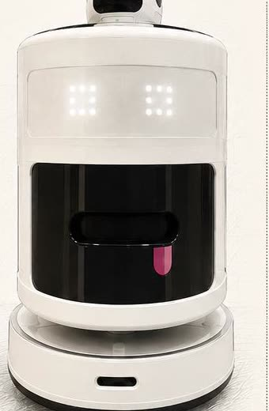

ПО
для устройств
Мобильные приложения, интерфейсы, интеграция с оборудованием и данными.
ООО «КубианЛаб»
Создаем роботов, программные системы и цифровые модели. От идеи и прототипа до пилота.

Проект реализован при поддержке Фонда содействия инновациям в рамках программы «Студенческий стартап» мероприятия «Платформа университетского технологического предпринимательства» федерального проекта «Технологии».
Компетенции
Мобильные приложения, интерфейсы, интеграция с оборудованием и данными.
Конструкция, электроника, датчики и управление в одном продукте.
Наглядные сценарии процессов, метрики и проверка решений до внедрения.
Разработки
Выберите проект, чтобы узнать детали
Робототехника
Мобильный комплекс для параллельной сборки заказов.
Цифровой двойник
Управление заказами и оценка сценариев работы.
Сервисная робототехника
Автономная уборка, карта пространства и удаленный контроль.

ПодробнееКоманда
Руководитель проекта, генеральный директор, робототехник.
Инженер. Программное и аппаратное обеспечение.
Разработка программного обеспечения и конструкции.
Аналитик. Исследует процессы, формирует требования, помогает превратить задачу бизнеса в понятный план разработки.
Контакты